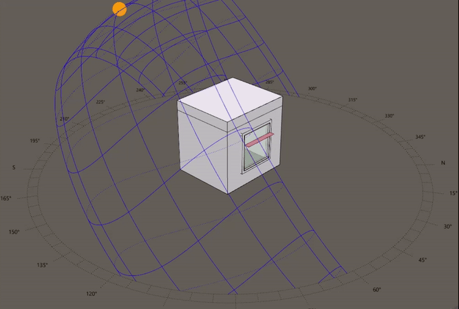
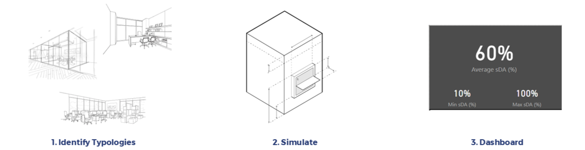
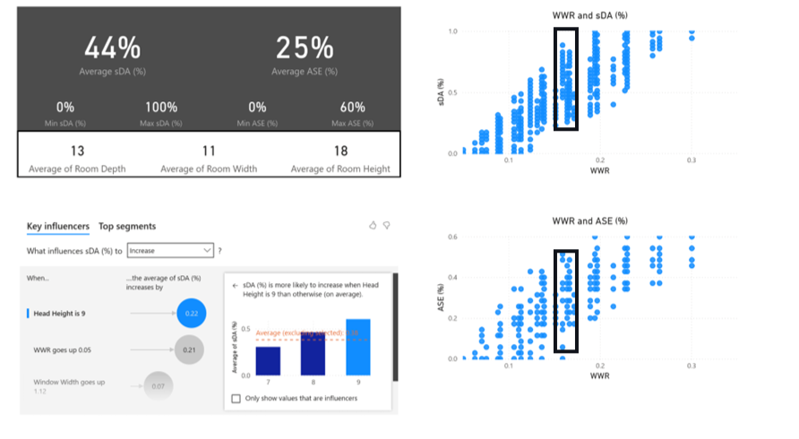
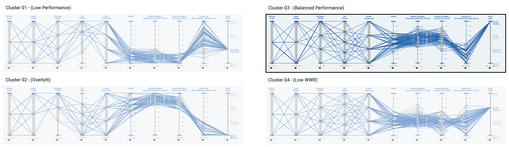
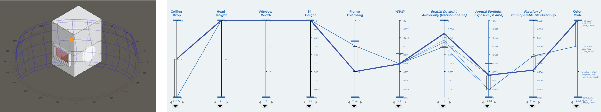
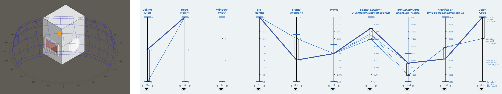

Daylighting Studies
Our clients often need a quick understanding of how they can maximize daylighting performance early in the design process. So, while at WSP, I developed a workflow that generated thousands of possible window orientations on a simple box model, simulated each iteration, and accumulated the results for clustering analysis and dashboard visualization.

The process for this schematic level design tool is to identify key room typologies within the design, enter room dimensions and materials, simulate, and
visualize the results. The goal is to provide the client with a wide variety of possible window orientations across the design space to prevent limiting their options as
the project progresses into the design process.

A custom C# plugin in Grasshopper modifies the window of a box model to account for a wide variety of parameters. The simulations were run using
Climate Studio in Grasshopper, and the results are converted into .json files for collation, analysis and visualization.

The dashboard would allow users to visualize and navigate the results intelligently to test out individual window orientations.



We used data segmentation to identify patterns and extract out those window orientations that balanced different forms of performance.
The different parallel coordinate graphs above isolate different clusters of the same dataset. Through this process we identified an effective subset of iterations
at the earliest phase of the project and discovered that window width was more important than height in maximizing illumination while minimizing window area.